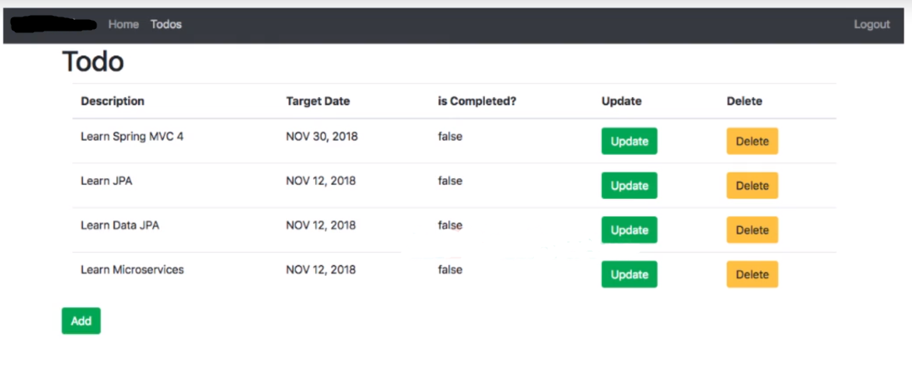
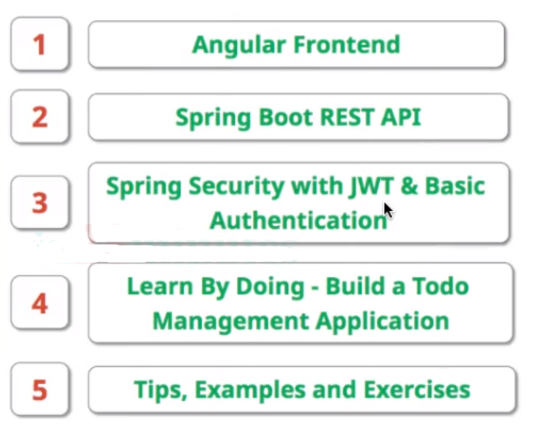
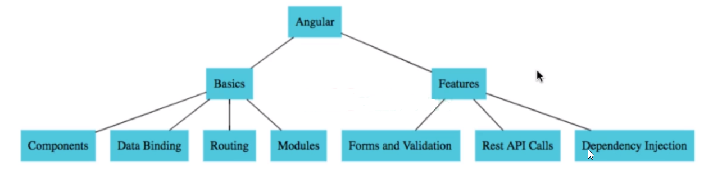

Todo Full Stack with Angular and Spring Boot
Course Link : https://tcsglobal.udemy.com/course/full-stack-application-development-with-spring-boot-and-angular/learn
Repository Link : https://github.com/in28minutes/full-stack-with-angular-and-spring-boot
Frontend
Introduction
Final App we’ll build

Learning Steps

AngularLearningTopics

- Generated frontend project -
ng new todo
AppComponent
app.component.html
<router-outlet></router-outlet> app-routing.module.ts
const routes: Routes = [
{ path: '', component: LoginComponent },
{ path: 'login', component: LoginComponent },
{ path: 'welcome/:name', component: WelcomeComponent }, //Activated Route Parameters
{ path: '**', component: ErrorComponent },
];
...app.module.ts
@NgModule({
declarations: [
AppComponent,
WelcomeComponent,
LoginComponent,
ErrorComponent
],
imports: [
BrowserModule,
AppRoutingModule,
FormsModule
],
...LoginComponent
login.component.html
Username : <input type="text" name="username" [(ngModel)] = "username">
Password : <input type="password" name="password" [(ngModel)] = "password">
<button (click)="handleLogin()">Login</button> <br>
<small *ngIf="invalidLogin">Login Unsuccessful</small>login.component.ts
export class LoginComponent implements OnInit {
username = '';
password = '';
invalidLogin = false;
constructor(private router: Router) {}
ngOnInit(): void {}
handleLogin() {
if (this.username === 'user' && this.password === 'pass') {
this.router.navigate(['welcome', this.username])
this.invalidLogin = false;
// console.log("Login successful of User : " + this.username)
} else {
this.invalidLogin = true
}
}
}WelcomeComponent
welcome.component.html
<p>welcome {{name}} !! to our awesome app</p>welcome.component.ts
export class WelcomeComponent implements OnInit {
name = ''
constructor(private aroute: ActivatedRoute) { }
ngOnInit(): void {
this.name =this.aroute.snapshot.params['name']
}
}Todo List Design
List-Todos Component
app-routing.module.ts
{ path: 'todos', component: ListTodosComponent },list-todos.component.html
<table border="1">
<caption>My Todos</caption>
<thead>
<tr>
<th>Description</th>
<th>Date</th>
<th>Is Completed ?</th>
</tr>
</thead>
<tbody>
<tr *ngFor="let todo of todos">
<td>{{ todo.description }}</td>
<td>{{ todo.targetDate | date }}</td>
<td>{{ todo.done }}</td>
</tr>
</tbody>
</table>list-todos.component.ts
export class Todo {
constructor(
public id: number,
public description: string,
public done: boolean,
public targetDate: Date
) {}
}
@Component({
...
export class ListTodosComponent implements OnInit {
todos = [
new Todo(1, 'My first Todo', true, new Date()),
new Todo(1, 'Welcome to India', false, new Date()),
new Todo(1, 'Angular project', true, new Date()),
];
...
}welcome.component.html - adding routing from welcome page to TodoList page
<p>welcome {{name}} !! to our awesome app</p>
<h3>You can manage your todos <a routerLink="/todos">here</a>.</h3>Snapshot after TodoList component. (Before Bootstrap styling)

Added Bootstrap
$ npm install bootstrap
$ npm install jquery
// "bootstrap": "^4.6.1",
// "jquery": "^3.6.0",angular.json
"architect": {
"build": { ...
"styles": [
"src/styles.css",
"./node_modules/bootstrap/dist/css/bootstrap.min.css"
],
"scripts": [
"./node_modules/jquery/dist/jquery.js",
"./node_modules/bootstrap/dist/js/bootstrap.js"
] ...Header-Footer-Error Component
Created 3 components for Header, Footer and Error.
nav.component.html - Header
<nav class="navbar navbar-expand-lg navbar-dark mb-2" style="background-color: #016f77;">
<a class="navbar-brand" routerLink="/">Todo Fullstack</a>
<button class="navbar-toggler" type="button" data-toggle="collapse" data-target="#navbarSupportedContent" aria-controls="navbarSupportedContent" aria-expanded="false" aria-label="Toggle navigation">
<span class="navbar-toggler-icon"></span>
</button>
<div class="collapse navbar-collapse" id="navbarSupportedContent">
<ul class="navbar-nav mr-auto">
<!--<li *ngIf="!loggedIn()" class="nav-item">
<a class="nav-link" routerLink="/login" routerLinkActive="active" [routerLinkActiveOptions]="{exact: true}">Login <span class="sr-only">(current)</span></a>
</li>-->
<li class="nav-item">
<a class="nav-link" routerLink="/welcome/user" routerLinkActive="active">Home</a>
</li>
<li class="nav-item">
<a class="nav-link" routerLink="/todos" routerLinkActive="active">Todos</a>
</li>
</ul>
<ul class="navbar-nav">
<li class="nav-item">
<a class="nav-link" routerLink="/login" routerLinkActive="active">Login</a>
</li>
<li class="nav-item">
<a class="nav-link" routerLink="/logout" routerLinkActive="active">Logout</a>
</li>
</ul>
</div>
</nav>footer.component.html - Footer
<footer class="footer text-light">
<div class="container align-middle text-center">
<i>Made with ❤ by <a class="text-light" href="https://swarnadeepghosh.github.io/">Swarnadeep</a></i>
</div>
</footer>footer.component.css - Footer
.footer{
position: absolute;
bottom: 0;
width: 100%;
height: 40px;
background-color: #016f77;
}
.container{
padding: 8px;
}error.component.html - For error page
<div class="d-flex my-5 justify-content-center align-items-center align-middle" id="error">
<h1 class="mr-3 pr-3 align-top border-right inline-block align-content-center">404</h1>
<div class="inline-block align-middle">
<h2 class="font-weight-normal lead" id="desc">The page you requested was not found. Please contact administrator.</h2>
</div>
</div>error.component.css - For error page
#error { height: 100%; }Setting Bootstrap designs
app-routing.module.ts - Routing Module
const routes: Routes = [
{ path: '', redirectTo: '/login', pathMatch: 'full' },
{ path: 'login', component: LoginComponent },
{ path: 'welcome/:name', component: WelcomeComponent },
{ path: 'todos', component: ListTodosComponent },
{ path: '**', component: ErrorComponent },
];app.component.html
<app-nav></app-nav>
<div class="container">
<router-outlet></router-outlet>
</div>
<app-footer></app-footer>list-todos.component.html
<h2>My Todo's</h2>
<div class="container">
<table class="table">
<thead>
<tr>
<th>Description</th>
<th>Date</th>
<th>Is Completed ?</th>
</tr>
</thead>
<tbody>
<tr *ngFor="let todo of todos">
<td>{{ todo.description }}</td>
<td>{{ todo.targetDate | date }}</td>
<td>{{ todo.done }}</td>
</tr>
</tbody>
</table>
</div>login.component.html
<form>
<div class="form-group">
<label for="user">Username</label>
<input type="text" class="form-control" id="user" name="username" [(ngModel)] = "username">
</div>
<div class="form-group">
<label for="password">Password</label>
<input type="password" class="form-control" id="password" name="password" [(ngModel)] = "password">
</div>
<button type="submit" class="btn btn-primary" (click)="handleLogin()">Login</button>
<i *ngIf="invalidLogin" class="text-danger m-4">Login Unsuccessful</i>
</form>welcome.component.html
<h1>Welcome!!</h1>
<p>Welcome <b>{{ name }}</b> to Todo Fullstack app designed with -</p>
<ul>
<li>Frontend using Angular</li>
<li>Backend using Spring Boot</li>
<li>Authentication using Spring Security</li>
</ul>
<p>You can manage all your todos <a routerLink="/todos"><b>here</b></a>.</p>Frontend Authentication
Created a service hardcodedAuth for Hardcoded Authentication.
$ ng g service hardcodedAuth
Hardcoded Authentication Service
hardcoded-auth.service.ts – We are hardcoding, checking if Logged In and removing user on logout thorugh this service.
export class HardcodedAuthService {
constructor() {}
authenticate(username: string, password: string) {
if (username === 'user' && password === 'pass') {
sessionStorage.setItem('authenticatedUser', username);
return true;
} else {
return false;
}
}
isUserLoggedIn() {
let user = sessionStorage.getItem('authenticatedUser');
return !(user === null);
}
logout() { let user = sessionStorage.removeItem('authenticatedUser'); }
}login.component.ts
...
handleLogin() {
// if (this.username === 'user' && this.password === 'pass') {
if (this.hardcodedAuthService.authenticate(this.username, this.password)) {
...Logout Component
logout.component.html
<h1> You have successfully logged out.</h1>
<p>Thanks for using our application.</p>logout.component.ts
export class LogoutComponent implements OnInit {
constructor(private hardcodedAuthService: HardcodedAuthService) {}
ngOnInit(): void { this.hardcodedAuthService.logout(); }
}Allowing Nav items to Loggedin User
nav.component.html - configured the below lines.
...
<a *ngIf="hardcodedAuthService.isUserLoggedIn()" class="nav-link" routerLink="/todos" routerLinkActive="active">Todos</a>
<a *ngIf="!hardcodedAuthService.isUserLoggedIn()" class="nav-link" routerLink="/login" routerLinkActive="active">Login</a>
<a *ngIf="hardcodedAuthService.isUserLoggedIn()" class="nav-link" routerLink="/logout" routerLinkActive="active">Logout</a>
...nav.component.ts
constructor(public hardcodedAuthService : HardcodedAuthService) { }RouteGuard Service
route-guard.service.ts
import { Injectable } from '@angular/core';
import { ActivatedRouteSnapshot, CanActivate, Router, RouterStateSnapshot } from '@angular/router';
import { Observable } from 'rxjs';
import { HardcodedAuthService } from './hardcoded-auth.service';
@Injectable({ providedIn: 'root',})
export class RouteGuardService implements CanActivate {
constructor(private hardcodedAuthService: HardcodedAuthService, private router: Router) {}
canActivate(route: ActivatedRouteSnapshot, state: RouterStateSnapshot) {
if (this.hardcodedAuthService.isUserLoggedIn()) { return true; }
else{
this.router.navigate(['/login']);
return false;
}
}
}app-routing.module.ts
const routes: Routes = [
{ path: '', redirectTo: '/login', pathMatch: 'full' },
{ path: 'login', component: LoginComponent },
{ path: 'welcome/:name', component: WelcomeComponent, canActivate:[RouteGuardService] },
{ path: 'todos', component: ListTodosComponent, canActivate:[RouteGuardService] },
{ path: 'logout', component: LogoutComponent, canActivate:[RouteGuardService] },
{ path: '**', component: ErrorComponent },
];Backend
Basic Backend Setup
Created a Spring Boot starter project TodoFullStack using below dependencies:
spring-boot-starter-web
spring-boot-starter-data-jpa
spring-boot-devtools
postgresqlbackend.java
package com.swarna.todoFullStack;
public class HelloWorldBean {
public String message;
public HelloWorldBean(String message) {
this.message = message;
}
// Auto Generated Getter, Setter and ToString below ...
}backend.java - Created 3 API
/hello- returns String hardcoded rsponse/hello-bean- returns new HelloWorldBean object which has property “message”/hello/path-variable/{name}- prints path variable also
package com.swarna.todoFullStack;
// Allowing localhost:4200 so that backend can be called by frontend server
@CrossOrigin(origins = "http://localhost:4200")
@RestController
public class HelloController {
@GetMapping("hello")
public String helloWorld() {
return "Hello world";
}
@GetMapping("hello-bean") // Bean is converting into JSON and send to view.
public HelloWorldBean helloWorldBean() {
// throw new RuntimeException("Some error occurred. Please contact helpdesk.");
return new HelloWorldBean("Hello World from HelloWorldBean backend");
}
@GetMapping("hello/path-variable/{name}")
public HelloWorldBean helloWorldBeanWithPathVariable(@PathVariable String name) {
return new HelloWorldBean(String.format("Hello World from Path Variable, Username : %s", name));
}
}Connnecting Backend to Frontend
app.module.ts - importing HttpClientModule
import { HttpClientModule } from '@angular/common/http'
imports: [ ...
HttpClientModule
...welcome-data.service.ts - This will fetch data from backend by REST-API call and share the response to angular components.
import { HttpClient } from '@angular/common/http';
import { Injectable } from '@angular/core';
class HelloWorldBean {
constructor(public message: String) {}
}
@Injectable({
providedIn: 'root',
})
export class WelcomeDataService {
constructor(private http: HttpClient) {}
executeHelloWorldBeanService() {
return this.http.get<HelloWorldBean>('http://localhost:8080/hello-bean');
// returns> Observable {source: Observable, operator: ƒ} and no call in network tab
// console.log('executeHelloWorldBean');
}
executeHelloWorldBeanServiceWithParameter(name: any) { // Fetching Path Variable from backend
return this.http.get<HelloWorldBean>(`http://localhost:8080/hello/path-variable/${name}`);
}
}welcome.component.ts - Added 2 methods to handle success and error response, 1 method to fetch Welcome message without parameter and 1 method to fetch Welcome message with parameter
export class WelcomeComponent implements OnInit {
welcomeMessageFromService: string | undefined;
...
handleSuccessResponse(response: any) {
this.welcomeMessageFromService = response.message;
console.log(response.message);
}
handleErrorResponse(error: any) {
this.welcomeMessageFromService = error.error.message;
}
getWelcomeMessage() {
// console.log(this.welcomeDataService.executeHelloWorldBeanService());
this.welcomeDataService.executeHelloWorldBeanService().subscribe(
(response) => this.handleSuccessResponse(response),
(error) => this.handleErrorResponse(error)
);
// console.log('Last line of getWelcomeMessage'); // this will be print before response because observable is asynchronous call
}
getWelcomeMessageWithParameter() {
this.welcomeDataService
.executeHelloWorldBeanServiceWithParameter(this.name)
.subscribe(
(response) => this.handleSuccessResponse(response),
(error) => this.handleErrorResponse(error)
);
}
}welcome.component.html - created a button that will fetch data from local backend server and show output message in html page.
...
<div class="container">
Click here to get welcome message from backend
<button (click)="getWelcomeMessageWithParameter()" class="btn btn-primary">Get Welcome Message</button>
</div>
<div class="container" *ngIf="welcomeMessageFromService">
<h3>Welcome Message : </h3>
{{welcomeMessageFromService}}
</div>CRUD Operation
| Operation | Request Method | URI | Returns |
|---|---|---|---|
| Read all todos | GET | /users/{username}/todos | 200 OK with Todo List |
| Read one todo | GET | /users/{username}/todos/{todo_id} | 200 OK with one Todo |
| Create a todo | POST | /users/{username}/todos/ | 201 CREATED |
| Update a todo | PUT | /users/{username}/todos/{todo_id} | 200 OK with updated Todo |
| Delete a todo | DELETE | /users/{username}/todos/{todo_id} | 204 NO CONTENT => for Successful Deletion, 404 NOT FOUND => for Todo Not Found |
VsCode Lombok issue :
Adding Lombok in pom.xml
<dependency>
<groupId>org.projectlombok</groupId>
<artifactId>lombok</artifactId>
<optional>true</optional>
</dependency>If your project loads before installing this plugin
Lombok Annotations Support for VS Code, you can run this
command in vscode to reload the project.
Press Command + shift + P and execute:
Java: Clean Java language server workspaceBackend Model, Service, Controller
Todo.java
@Data
@NoArgsConstructor
@AllArgsConstructor
@Builder
public class Todo {
private long id;
private String username;
private String description;
private Date targetDate;
private boolean isDone;
}TodoHardCodedService.java
@Service
public class TodoHardCodedService {
private static List<Todo> todos = new ArrayList<>();
private static int idCounter = 0;
static {
todos.add(new Todo(++idCounter, "user", "My first Todo", new Date(), false));
todos.add(new Todo(++idCounter, "user", "Spring Boot microservices", new Date(), true));
todos.add(new Todo(++idCounter, "user", "Angular", new Date(), false));
}
}TodoController.java
@CrossOrigin(origins = "http://localhost:4200") // Allowing localhost:4200 so that backend can be called by frontend server
@RestController
public class TodoController {
@Autowired
private TodoHardCodedService todoService;
}ReadTodos Backend
TodoHardCodedService.java
public List<Todo> getAllTodos() {
return todos;
}TodoController.java
@GetMapping("/users/{username}/todos")
public List<Todo> getAllTodos(@PathVariable String username) {
return todoService.getAllTodos();
// returns default 200 OK with Todo List
}ReadTodos FrontEnd
todo-data.service.ts - to get data from backend
@Injectable({
providedIn: 'root'
})
export class TodoDataService {
constructor(private http: HttpClient) { }
getAllTodos(username: any) {
return this.http.get<Todo[]>(`http://localhost:8080/users/${username}/todos`);
}
}list-todos.component.ts - to serve data from data service to frontend
export class ListTodosComponent implements OnInit {
message: string | undefined;
todos: Todo[] = [];
// [
// new Todo(1, 'My first Todo', true, new Date()),
// new Todo(1, 'Welcome to India', false, new Date()),
// new Todo(1, 'Angular project', true, new Date()),
// ];
constructor(private todoService: TodoDataService) {}
ngOnInit(): void {
this.refreshTodos();
}
refreshTodos(){
this.todoService.getAllTodos('user').subscribe((response) => {
// console.log(response);
this.todos = response;
});
}
}DeleteTodo Backend
TodoHardCodedService.java
public Todo findById(long id) {
for(Todo todo : todos){
if(todo.getId() == id) return todo;
}
return null;
}
public Todo deleteById(long id){
Todo todo = findById(id);
if(todo == null) return null;
if(todos.remove(todo)) return todo;
return null;
}TodoController.java
@DeleteMapping("/users/{username}/todos/{id}")
public ResponseEntity<Void> deleteTodo(@PathVariable String username, @PathVariable long id) {
Todo todo = todoService.deleteById(id);
if (todo != null) {
return ResponseEntity.noContent().build();
}
return ResponseEntity.notFound().build();
// returns 204 no Content for successful deletion and returns 404 for not found
}DeleteTodo FrontEnd
todo-data.service.ts - to get data from backend
deleteTodo(username: any, id: number) {
return this.http.delete(`http://localhost:8080/users/${username}/todos/${id}`);
}list-todos.component.ts - to serve data from data service to frontend
deleteTodo(id: number) {
console.log(`Todo Deleted ${id}`);
this.todoService.deleteTodo('user', id).subscribe((response) => {
console.log(response);
this.message = `Delete of Todo ${id} successful`;
this.refreshTodos();
});
}list-todos.component.html
<h2>My Todo's</h2>
<div class="alert alert-success" *ngIf="message">{{message}}</div>
<div class="container">
<table class="table">
<thead>
<tr>
<th>Description</th>
<th>Date</th>
<th>Is Completed ?</th>
<th>Delete</th>
</tr>
</thead>
<tbody>
<tr *ngFor="let todo of todos">
<td>{{ todo.description }}</td>
<td>{{ todo.targetDate | date }}</td>
<td>{{ todo.done }}</td>
<td><button (click)="deleteTodo(todo.id)" class="btn btn-danger">Delete</button></td>
</tr>
</tbody>
</table>
</div>UpdateTodo Backend
TodoHardCodedService.java
public Todo getTodo(long id) { // This data will be populated in update frontend screen
return findById(id);
}
public Todo save(Todo todo) {
if (todo.getId() == -1 || todo.getId() == 0) { // Saving Todo if not exist
todo.setId(++idCounter);
todos.add(todo);
} else {
deleteById(todo.getId()); // Deleting and adding Todo if already exists.
todos.add(todo);
}
return todo;
}TodoController.java
@PutMapping("/users/{username}/todos/{id}")
public ResponseEntity<Todo> updateTodo(@PathVariable String username, @PathVariable long id,
@RequestBody Todo todo) {
Todo todoUpdated = todoService.save(todo);
return new ResponseEntity<Todo>(todo, HttpStatus.OK);
// returns 200 OK status with updated Todo
}UpdateTodo FrontEnd
We need Todo Component to Update /
Add a new Todo in Todo List.
(ng generate component todo)
app-routing.module.ts - to get data from backend
{ path: 'todos/:id', component: TodoComponent, canActivate:[RouteGuardService] },todo-data.service.ts - to get data from backend
getTodo(username: any, id: number) {
return this.http.get<Todo>(`http://localhost:8080/users/${username}/todos/${id}`);
}
updateTodo(username: any, id: number, todo: Todo) {
return this.http.put(`http://localhost:8080/users/${username}/todos/${id}`, todo);
}list-todos.component.ts - to serve data from data service to frontend
constructor(private todoService: TodoDataService, private router: Router) {}
updateTodo(id: number) {
// console.log(`Todo Updated- ${id}`);
this.router.navigate(['todos', id]);
}list-todos.component.html
<th>Update</th>
...
<td><button (click)="updateTodo(todo.id)" class="btn btn-warning">Update</button></td>todo.component.ts - to Update / Add a Todo
export class TodoComponent implements OnInit {
id: number = 0;
todo!: Todo;
constructor(private todoService:TodoDataService, private route:ActivatedRoute, private router:Router) {}
ngOnInit(): void {
this.id = this.route.snapshot.params['id'];
this.todo = new Todo(this.id, '', false, new Date()); // Initialising todo to avoid undefined error in console.
if (this.id != -1) {
this.todoService.getTodo('user', this.id).subscribe((data) => (this.todo = data));
}
}
saveTodo() {
if(this.id === -1){
//Create todo
this.todoService.createTodo('user', this.todo).subscribe((data) => {
this.router.navigate(['todos']);
});
} else{
this.todoService.updateTodo('user', this.id, this.todo).subscribe((data) => {
this.router.navigate(['todos']);
});
}
}
}todo.component.html
<h1>Update / Create Todo</h1>
<div class="container">
<div class="alert alert-warning" *ngIf="todoForm.dirty && todoForm.invalid">Enter valid values</div>
<div class="alert alert-warning" *ngIf="todoForm.dirty && description.invalid">Enter atleast 4 characters in Description</div>
<div class="alert alert-warning" *ngIf="todoForm.dirty && targetDate.invalid">Enter valid Target Date</div>
<form (ngSubmit)="!todoForm.invalid && saveTodo()" #todoForm="ngForm">
<fieldset class="form-group">
<label for="description">Description</label>
<input type="text" [(ngModel)]="todo.description" #description="ngModel" name="description" class="form-control" required="required" minlength="4">
</fieldset>
<fieldset class="form-group">
<label for="date">Target Date</label>
<input type="date" [ngModel]="todo.targetDate | date:'yyyy-MM-dd'" (ngModelChange)="todo.targetDate=$event" #targetDate="ngModel"
name="date" class="form-control" required="required">
</fieldset>
<button class="btn btn-success" type="submit">Save</button>
</form>
</div>AddTodo Backend
TodoHardCodedService.java - No change –
todoService.save(todo) method is already added.
TodoController.java
@PostMapping("/users/{username}/todos")
public ResponseEntity<Void> createTodo(@PathVariable String username, @RequestBody Todo todo) {
Todo createdTodo = todoService.save(todo);
// Creating a new URI for the new Todo and returning URL by appending id
URI uri = ServletUriComponentsBuilder.fromCurrentRequest().path("/{id}").buildAndExpand(createdTodo.getId()).toUri();
System.out.println(uri);
return ResponseEntity.created(uri).build();
// returns Location = http://localhost:8080/users/user/todos/4 with response code 201 Created.
}AddTodo FrontEnd
todo-data.service.ts - to get data from backend
createTodo(username: any, todo: Todo) {
return this.http.post(`http://localhost:8080/users/${username}/todos`, todo);
}list-todos.component.ts - to serve data from data service to frontend
addTodo(){
this.router.navigate(['todos', -1]);
}list-todos.component.html
<div class="row">
<button (click)="addTodo()" class="btn btn-success">Add Todo</button>
</div>Authentication with JWT
Backend Hardcoded Auth
pom.xml
<dependency>
<groupId>org.springframework.boot</groupId>
<artifactId>spring-boot-starter-security</artifactId>
</dependency>basicAuth/SecurityConfigurationBasicAuth.java - Configuring CSRF(Cross Site Request Format) with Spring Security
package com.swarna.todoFullStack.basicAuth;
@Configuration
@EnableWebSecurity
public class SecurityConfigurationBasicAuth extends WebSecurityConfigurerAdapter {
@Override
protected void configure(HttpSecurity http) throws Exception {
http
.csrf().disable() // disabling Cross Site Request Format
.authorizeRequests().antMatchers(HttpMethod.OPTIONS, "/**").permitAll()
.anyRequest().authenticated()
.and()
.httpBasic();
// .formLogin();
}
}application.properties
spring.security.user.name=user
spring.security.user.password=passwordFrontend Hardcoded Auth
app.module.ts
import { HttpInterceptorBasicAuthService } from './services/http/http-interceptor-basic-auth.service';
providers: [
{provide: HTTP_INTERCEPTORS, useClass: HttpInterceptorBasicAuthService, multi: true},
],welcome-data.service.ts
executeHelloWorldBeanServiceWithParameter(name: any) {
let basicAuthHeaderString = this.createBasicAuthenticationHeader();
let headers = new HttpHeaders({
Authorization : basicAuthHeaderString
})
return this.http.get<HelloWorldBean>(`http://localhost:8080/hello/path-variable/${name}`, {headers});
}
createBasicAuthenticationHeader() {
let username = 'user';
let password = 'pass';
let basicAuthHeaderString = 'Basic ' + window.btoa(username + ':' + password);
return basicAuthHeaderString;
}
/* welcome/user:1 Access to XMLHttpRequest at 'http://localhost:8080/hello/path-variable/user' from origin 'http://localhost:4200' has been blocked by CORS policy: No 'Access-Control-Allow-Origin' header is present on the requested resource.*/
// Access to XMLHttpRequest at 'http://localhost:8080/hello/path-variable/user' from origin 'http://localhost:4200' has been blocked by CORS policy: Response to preflight request doesn't pass access control check: No 'Access-Control-Allow-Origin' header is present on the requested resource.
// OPTION is being sent before GET request happen and it is failing
}But putting createBasicAuthenticationHeader() in each and individual incoming HTTP requests is a tedious task. So we will create a HttpInterceptor , which will intercept all incoming requests
app-interceptor-basic-auth.service.ts
import { HttpEvent, HttpHandler, HttpInterceptor, HttpRequest } from '@angular/common/http';
import { Injectable } from '@angular/core';
import { Observable } from 'rxjs';
@Injectable({
providedIn: 'root'
})
export class HttpInterceptorBasicAuthService implements HttpInterceptor{
// We will avoid adding Http headers in all Http requests. For eg, we will avoid below line.
// Thatswhy we will use HttpInterceptor which will be added automatically to all the http requests in our application.
// return this.http.get<HelloWorldBean>(`http://localhost:8080/hello/path-variable/${name}`, {headers});
constructor() { }
// We are intercpting incoming requests and adding Header entry, and returns the modified request back
intercept(request: HttpRequest<any>, next: HttpHandler): Observable<HttpEvent<any>> {
let username = 'user';
let password = 'pass';
let basicAuthHeaderString = 'Basic ' + window.btoa(username + ':' + password);
request = request.clone({
setHeaders: {
Authorization : basicAuthHeaderString
}
})
return next.handle(request);
}
}